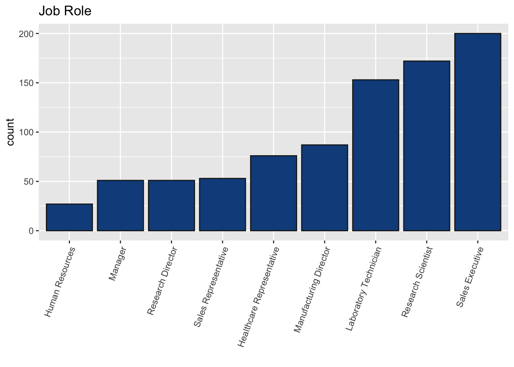
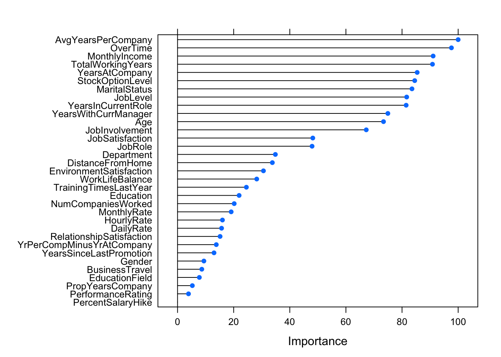

The objective of this project is to create a classification model that is capable of predicting attrition (Yes/No). The one requirement is that the model has a sensitivity and specificity > 0.60.
library(tidyverse)
library(ggplot2)
library(GGally)
library(mlbench)
library(caret)
library(corrplot)
library(randomForest)
library(knncat)
library(e1071)
library(fastDummies)
library(doSNOW)
library(parallel)numberofcores = detectCores() # number of cores available on machine
cl <- makeCluster(numberofcores, type = "SOCK")
# Register cluster so that caret will know to train in parallel.
registerDoSNOW(cl)df <- read.csv('CaseStudy2-data.csv', header=TRUE)
str(df)## 'data.frame': 870 obs. of 36 variables:
## $ ID : int 1 2 3 4 5 6 7 8 9 10 ...
## $ Age : int 32 40 35 32 24 27 41 37 34 34 ...
## $ Attrition : Factor w/ 2 levels "No","Yes": 1 1 1 1 1 1 1 1 1 1 ...
## $ BusinessTravel : Factor w/ 3 levels "Non-Travel","Travel_Frequently",..: 3 3 2 3 2 2 3 3 3 2 ...
## $ DailyRate : int 117 1308 200 801 567 294 1283 309 1333 653 ...
## $ Department : Factor w/ 3 levels "Human Resources",..: 3 2 2 3 2 2 2 3 3 2 ...
## $ DistanceFromHome : int 13 14 18 1 2 10 5 10 10 10 ...
## $ Education : int 4 3 2 4 1 2 5 4 4 4 ...
## $ EducationField : Factor w/ 6 levels "Human Resources",..: 2 4 2 3 6 2 4 2 2 6 ...
## $ EmployeeCount : int 1 1 1 1 1 1 1 1 1 1 ...
## $ EmployeeNumber : int 859 1128 1412 2016 1646 733 1448 1105 1055 1597 ...
## $ EnvironmentSatisfaction : int 2 3 3 3 1 4 2 4 3 4 ...
## $ Gender : Factor w/ 2 levels "Female","Male": 2 2 2 1 1 2 2 1 1 2 ...
## $ HourlyRate : int 73 44 60 48 32 32 90 88 87 92 ...
## $ JobInvolvement : int 3 2 3 3 3 3 4 2 3 2 ...
## $ JobLevel : int 2 5 3 3 1 3 1 2 1 2 ...
## $ JobRole : Factor w/ 9 levels "Healthcare Representative",..: 8 6 5 8 7 5 7 8 9 1 ...
## $ JobSatisfaction : int 4 3 4 4 4 1 3 4 3 3 ...
## $ MaritalStatus : Factor w/ 3 levels "Divorced","Married",..: 1 3 3 2 3 1 2 1 2 2 ...
## $ MonthlyIncome : int 4403 19626 9362 10422 3760 8793 2127 6694 2220 5063 ...
## $ MonthlyRate : int 9250 17544 19944 24032 17218 4809 5561 24223 18410 15332 ...
## $ NumCompaniesWorked : int 2 1 2 1 1 1 2 2 1 1 ...
## $ Over18 : Factor w/ 1 level "Y": 1 1 1 1 1 1 1 1 1 1 ...
## $ OverTime : Factor w/ 2 levels "No","Yes": 1 1 1 1 2 1 2 2 2 1 ...
## $ PercentSalaryHike : int 11 14 11 19 13 21 12 14 19 14 ...
## $ PerformanceRating : int 3 3 3 3 3 4 3 3 3 3 ...
## $ RelationshipSatisfaction: int 3 1 3 3 3 3 1 3 4 2 ...
## $ StandardHours : int 80 80 80 80 80 80 80 80 80 80 ...
## $ StockOptionLevel : int 1 0 0 2 0 2 0 3 1 1 ...
## $ TotalWorkingYears : int 8 21 10 14 6 9 7 8 1 8 ...
## $ TrainingTimesLastYear : int 3 2 2 3 2 4 5 5 2 3 ...
## $ WorkLifeBalance : int 2 4 3 3 3 2 2 3 3 2 ...
## $ YearsAtCompany : int 5 20 2 14 6 9 4 1 1 8 ...
## $ YearsInCurrentRole : int 2 7 2 10 3 7 2 0 1 2 ...
## $ YearsSinceLastPromotion : int 0 4 2 5 1 1 0 0 0 7 ...
## $ YearsWithCurrManager : int 3 9 2 7 3 7 3 0 0 7 ...# Remove unnecessary columns:
drop <- c("StandardHours","Over18","EmployeeCount","EmployeeNumber","ID")
df <- df[,!(names(df) %in% drop)]df %>% group_by(JobRole) %>%
summarise(count=n()) %>%
ggplot(aes(reorder(JobRole, count), y=count)) +
geom_bar(stat="identity", fill="dodgerblue4", col="grey10") +
theme(axis.text.x = element_text(angle = 70, hjust = 1)) +
labs(x='', title="Job Role")
df %>% group_by(JobLevel) %>%
summarise(count=n()) %>%
ggplot(aes(reorder(JobLevel, count, desc), y=count)) +
geom_bar(stat="identity", fill="dodgerblue4", col="grey10") +
labs(x='', title="Job Level")df %>% group_by(Gender,Attrition) %>%
summarise(count=n()) %>%
spread(Attrition,count) %>%
mutate(perc=Yes/No)## # A tibble: 2 x 4
## # Groups: Gender [2]
## Gender No Yes perc
## <fct> <int> <int> <dbl>
## 1 Female 301 53 0.176
## 2 Male 429 87 0.203# Proportion of Total Career Spent at Current Company
df$TotalWorkingYears[df$TotalWorkingYears==0]=0.00001
df$YearsAtCompany[df$YearsAtCompany==0]=0.00001
df <- df %>% mutate(PropYearsCompany = YearsAtCompany/TotalWorkingYears)
# Average Number of Years Per Company
df$NumCompaniesWorked[df$NumCompaniesWorked==0]=0.00001
df <- df %>% mutate(AvgYearsPerCompany = TotalWorkingYears/NumCompaniesWorked)
# Average Years Per Company - Years At Company
df <- df %>% mutate(YrPerCompMinusYrAtCompany = AvgYearsPerCompany - YearsAtCompany)# prepare training scheme
control <- trainControl(method="repeatedcv", number=5, repeats=2)
# train the model
model <- train(Attrition~., data=numdf, method="lvq", preProcess=c("scale"), trControl=control, metric="Kappa")
# estimate variable importance
importance <- varImp(model, scale=TRUE)
# summarize importance
print(importance)## ROC curve variable importance
##
## only 20 most important variables shown (out of 33)
##
## Importance
## AvgYearsPerCompany 100.00
## OverTime 97.61
## MonthlyIncome 91.08
## TotalWorkingYears 90.85
## YearsAtCompany 85.40
## StockOptionLevel 84.52
## MaritalStatus 83.54
## JobLevel 81.65
## YearsInCurrentRole 81.47
## YearsWithCurrManager 74.94
## Age 73.40
## JobInvolvement 67.25
## JobSatisfaction 48.20
## JobRole 47.94
## Department 34.86
## DistanceFromHome 33.78
## EnvironmentSatisfaction 30.61
## WorkLifeBalance 28.22
## TrainingTimesLastYear 24.53
## Education 21.94# plot importance
plot(importance)
# confusionMatrix(predict(model,numdf[,!names(numdf) %in% "Attrition"]),
# numdf$Attrition)# run the RFE algorithm
#### REMOVE HIGHLY CORRELATED FEATURES BEFORE DOING THIS STEP! ####
# x <- numdf
# normalization <- preProcess(x)
# x <- predict(normalization, x)
# x <- as.data.frame(x)
# subsets <- c(14,16,18,19,20, 22)
# ctrl <- rfeControl(functions = rfFuncs,
# method = "repeatedcv",
# repeats = 3,
# verbose = TRUE,
# allowParallel = TRUE)
#
# results <- rfe(x[,!names(numdf) %in% "Attrition"], x$Attrition, sizes=subsets, rfeControl=ctrl, metric = "Kappa")
#
# # summarize the results
# print(results)
# # list the chosen features
# predictors(results)
# # plot the results
# plot(results, type=c("g", "o"), xlab="Number of Features", main="Recursive Feature Elimination")# num_df <- df %>% select("Attrition","OverTime","AvgYearsPerCompany",
# "StockOptionLevel","Age","MaritalStatus",
# "JobInvolvement","JobRole","YearsWithCurrManager",
# "JobLevel","YearsInCurrentRole","WorkLifeBalance",
# "JobSatisfaction","MonthlyIncome","Department",
# "TotalWorkingYears","YearsAtCompany")
#
# knn_df <- dummy_cols(num_df, select_columns = c("OverTime","MaritalStatus",
# "JobRole"),
# remove_selected_columns = TRUE)
#
# numdf2 <- numdf %>% select("Attrition","OverTime","AvgYearsPerCompany",
# "StockOptionLevel","Age","MaritalStatus",
# "JobInvolvement","JobRole","YearsWithCurrManager",
# "JobLevel","YearsInCurrentRole","WorkLifeBalance",
# "JobSatisfaction","MonthlyIncome","Department",
# "TotalWorkingYears", "JobRole","YearsAtCompany")
# ctrl <- trainControl(method = "LOOCV", allowParallel = TRUE)
#
# set.seed(1)
# mod <- train(Attrition ~ ., data = numdf2,
# method = "knn",
# tuneGrid = expand.grid(k = c(2,3,4,5,7,9,11,13,15,18,20,25,30)),
# preProcess = c("BoxCox","scale","center"),
# trControl = ctrl,
# metric="Kappa")
#
# CM_knn = confusionMatrix(table(predict(mod, numdf2[,!names(numdf2) %in% "Attrition"]), knn_df$Attrition))
# CM_knn
#
# plot(mod, xlab="k nearest neighbors", main="KNN hyperparameter tuning")# train_control <- trainControl(method="LOOCV",
# # repeats = 2,
# allowParallel = TRUE)
#
# search_grid <- expand.grid(
# usekernel = FALSE,
# laplace = 0:1,
# adjust = seq(1, 4, by = 1))
#
# # train model
# library(naivebayes)
# nb_K <- train(Attrition~., data=knn_df,
# method = "naive_bayes",
# trControl = train_control,
# tuneGrid = search_grid,
# # search = "grid",
# metric = "Kappa",
# preProcess = c("BoxCox","scale","center"))
#
# # top 5 models
# nb_K$results %>%
# top_n(5, wt = Kappa) %>%
# arrange(desc(Kappa))
#
# # plot parameter tuning
# plot(nb_K, main="Naive Bayes Hyperparameter Tuning")
#
# # confusion matrix
# # confusionMatrix(nb_K)
# pred_K <- predict(nb_K, knn_df[,!names(knn_df) %in% "Attrition"])
# confusionMatrix(pred_K,knn_df$Attrition)# scaled_df <- numdf %>% select(-Attrition) %>% mutate_each(funs(scale(.) %>% as.vector))
# scaled_df$Attrition <- numdf$Attrition
#
#
# lfit <- glm(relevel(Attrition, ref="No")~., family=binomial(), data=scaled_df)
# summary(lfit)
#
# ltest <- data.frame("Attrition"=df$Attrition)
# ltest$probs <- predict(lfit, type="response")
# ltest$predict <- if_else(ltest$probs > 0.5, "Yes","No")
#
# confusionMatrix(as.factor(ltest$predict),df$Attrition)# ctrl <- trainControl(method = "repeatedcv",
# number = 5,
# repeats = 5,
# classProbs = TRUE,
# allowParallel = TRUE)
#
# searchgrid <- expand.grid(iter=seq(250,750, by=50),
# maxdepth=c(2,3,4),
# nu = c(0.075, 0.1, 0.125))
#
# set.seed(12)
# m <- train(Attrition~.,data=numdf2,
# trControl = ctrl,
# method = "ada",
# # tuneLength = 12,
# tuneGrid=searchgrid,
# metric="Kappa",
# preProc = c("scale"))
#
# confusionMatrix(predict(m,numdf2[,!names(numdf2) %in% "Attrition"]),df$Attrition)
# importance <- varImp(m, scale=TRUE)
#
# # plot importance
# plot(importance)
#
# ggplot(m)# dfu <- read.csv('CaseStudy2CompSet No Attrition.csv', header=TRUE)
# # Remove unnecessary columns:
# drop <- c("StandardHours","Over18","EmployeeCount","EmployeeNumber","ID")
# dfu <- dfu[,!(names(dfu) %in% drop)]
#
# # Proportion of Total Career Spent at Current Company
# dfu$TotalWorkingYears[dfu$TotalWorkingYears==0]=0.00001
# dfu$YearsAtCompany[dfu$YearsAtCompany==0]=0.00001
# dfu <- dfu %>% mutate(PropYearsCompany = YearsAtCompany/TotalWorkingYears)
# # Average Number of Years Per Company
# dfu$NumCompaniesWorked[dfu$NumCompaniesWorked==0]=0.00001
# dfu <- dfu %>% mutate(AvgYearsPerCompany = TotalWorkingYears/NumCompaniesWorked)
# # Average Years Per Company - Years At Company
# dfu <- dfu %>% mutate(YrPerCompMinusYrAtCompany = AvgYearsPerCompany - YearsAtCompany)
#
# must_convert <- sapply(dfu,is.factor)
# converted_features <- sapply(dfu[,must_convert],unclass)
# numdfu <- cbind(dfu[,!must_convert],converted_features)
#
# predicted_df <- predict(m,numdfu)
#
# dfu2 <- read.csv('CaseStudy2CompSet No Attrition.csv', header=TRUE)
# predict_submit <- data.frame("ID"=dfu2$ID,"Attrition"=predicted_df)
#
# write_csv(predict_submit,'./Attrition_Predictions.csv')http://topepo.github.io/caret/model-training-and-tuning.html#model-training-and-parameter-tuning http://topepo.github.io/caret/recursive-feature-elimination.html#rfe https://machinelearningmastery.com/an-introduction-to-feature-selection/ https://machinelearningmastery.com/feature-selection-with-the-caret-r-package/